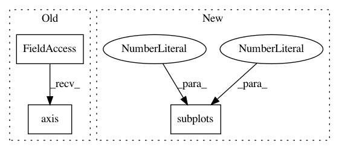

27c2dc10bb9f83026db6378c151d8108fc044af8,examples/images_contours_and_fields/contour_image.py,,,#,20
Before Change
cmap=cmap, norm=norm)
v = plt.axis()
plt.contour(Z, levels, colors="k", origin="image", extent=extent)
plt.axis(v)
ylim = plt.get(plt.gca(), "ylim")
plt.setp(plt.gca(), ylim=ylim[::-1])
plt.title("Origin from rc, reversed y-axis")
plt.colorbar(im)
After Change
norm = cm.colors.Normalize(vmax=abs(Z).max(), vmin=-abs(Z).max())
cmap = cm.PRGn
fig, _axs = plt.subplots(nrows=2, ncols=2)
fig.subplots_adjust(hspace=0.3)
axs = _axs.flatten()
cset1 = axs[0].contourf(X, Y, Z, levels, norm=norm,
In pattern: SUPERPATTERN
Frequency: 3
Non-data size: 3
Instances
Project Name: matplotlib/matplotlib
Commit Name: 27c2dc10bb9f83026db6378c151d8108fc044af8
Time: 2018-06-27
Author: jklymak@gmail.com
File Name: examples/images_contours_and_fields/contour_image.py
Class Name:
Method Name:
Project Name: matplotlib/matplotlib
Commit Name: ec5e8863a6352da673b55cb971529f38278cf64e
Time: 2018-03-26
Author: pmhobson@gmail.com
File Name: examples/images_contours_and_fields/contour_image.py
Class Name:
Method Name:
Project Name: scikit-learn/scikit-learn
Commit Name: e650a207efc9dd33556b1b9678b043f73a18aecb
Time: 2019-11-14
Author: thomasjpfan@gmail.com
File Name: examples/classification/plot_digits_classification.py
Class Name:
Method Name: